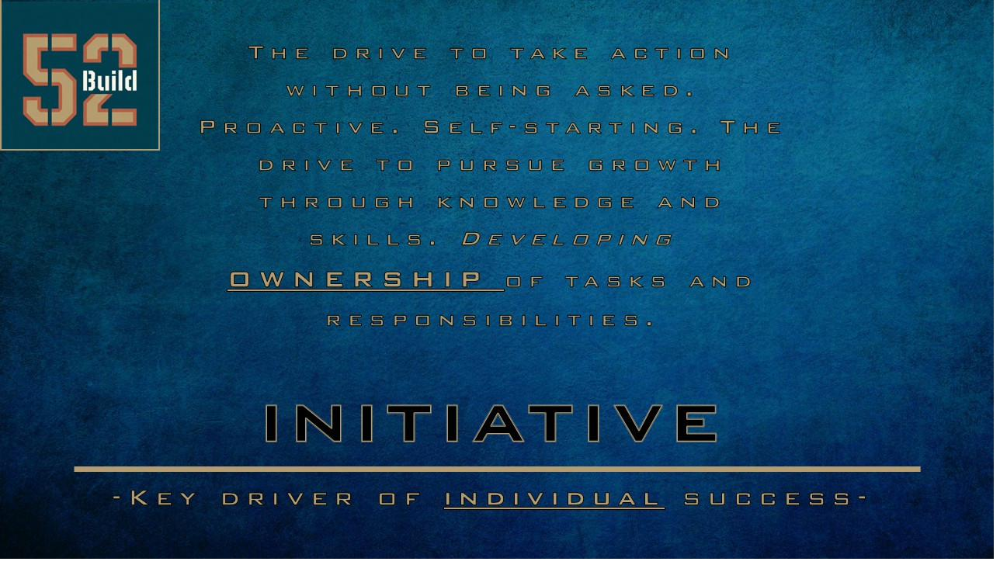
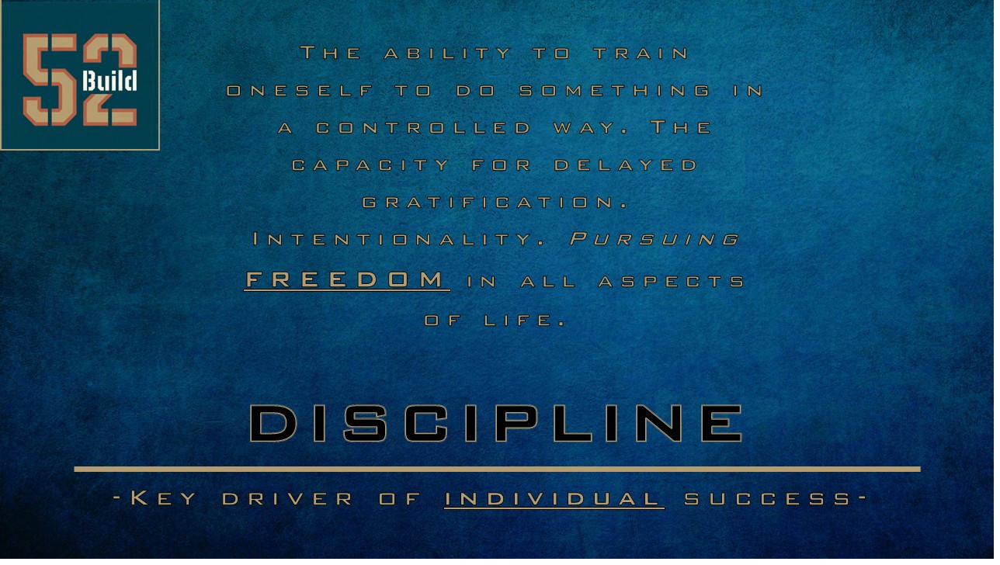
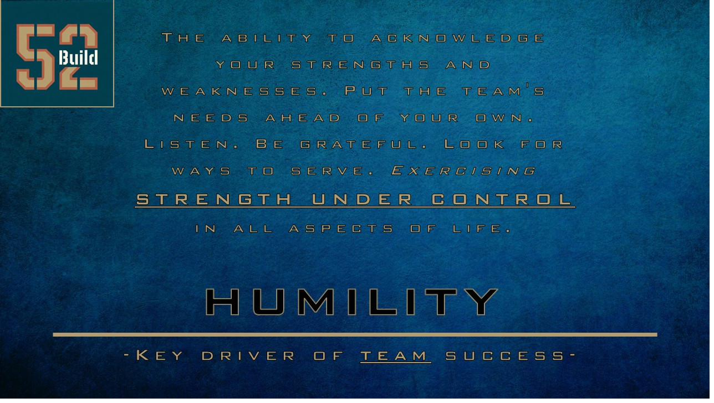
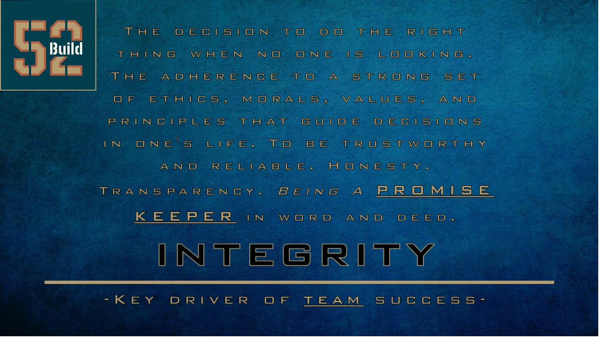
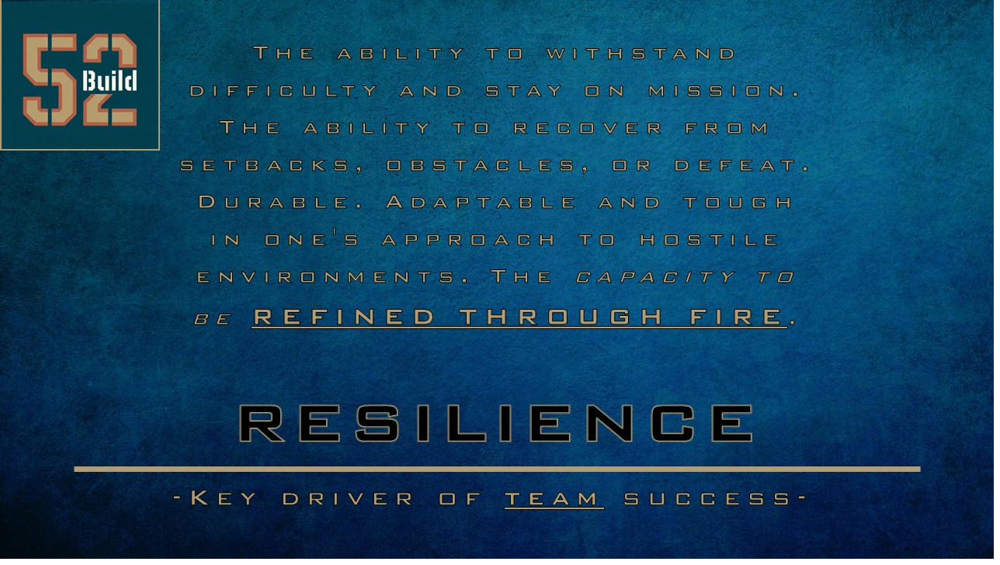
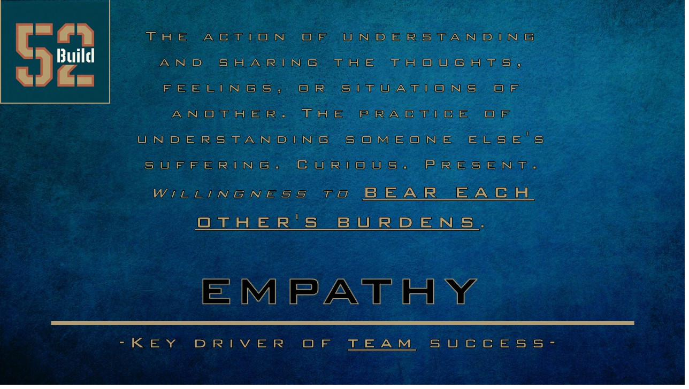
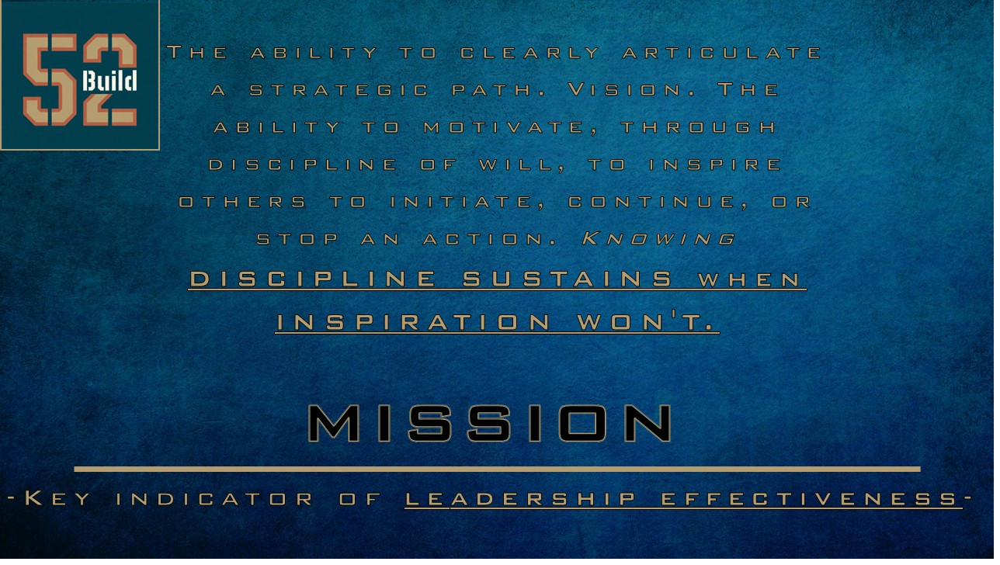
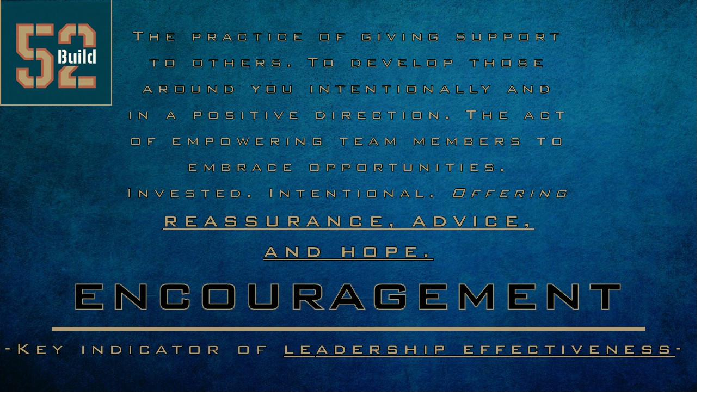

Insights on construction, leadership, and what it means to build right. Real stories from the job site, grounded in the I'D HIRE ME framework.

The drive to take action without being asked. How proactive, self-starting behavior separates good crews from great ones — and why it matters for your project.

The ability to train oneself to do something in a controlled way. In construction, discipline is the difference between a project that finishes on time and one that drags on for months.

Put the team's needs ahead of your own. Listen. Be grateful. Look for ways to serve. How exercising strength under control makes every project better.

The decision to do the right thing when no one is looking. Honesty. Transparency. Why being a promise keeper in word and deed is non-negotiable in construction.

The ability to withstand difficulty and stay on mission. Every build hits a wall. The crews that recover from setbacks are the ones that deliver exceptional work.

Understanding and sharing the feelings of another. On a job site, empathy means being curious, present, and willing to step into someone else's shoes.

The ability to clearly articulate a strategic path. Vision. Knowing that discipline sustains when inspiration fades — and how that shapes how we lead every project.

The practice of giving support to others. Developing those around you intentionally and in a positive direction. How encouragement transforms a construction team.